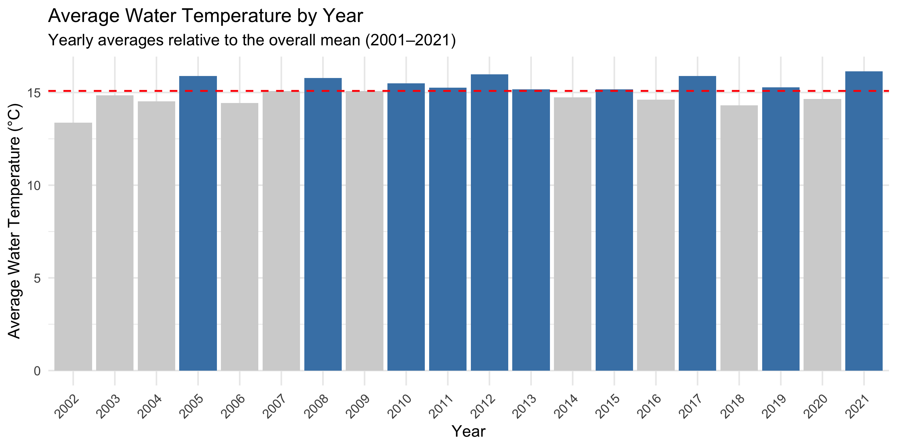
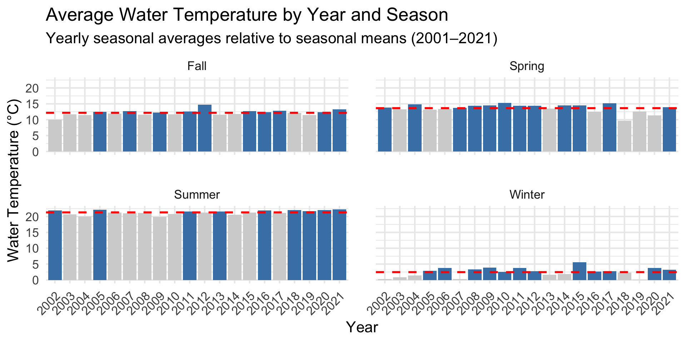
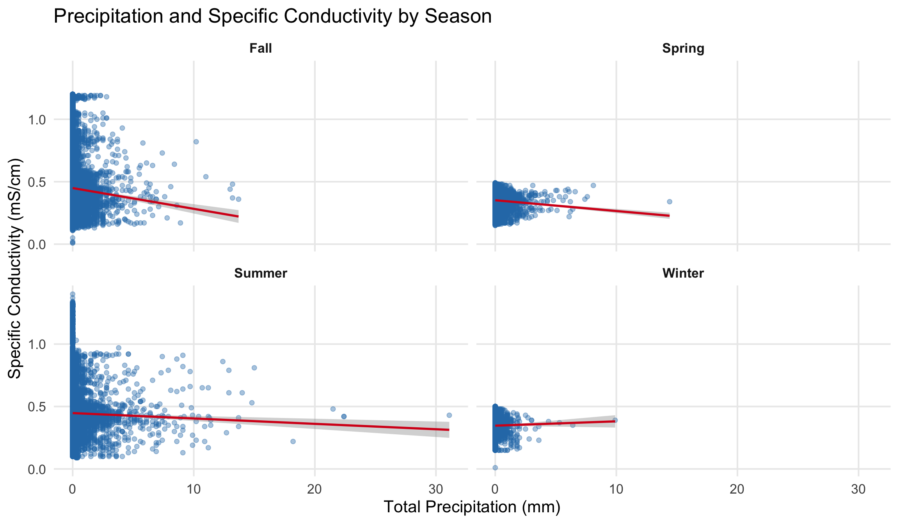
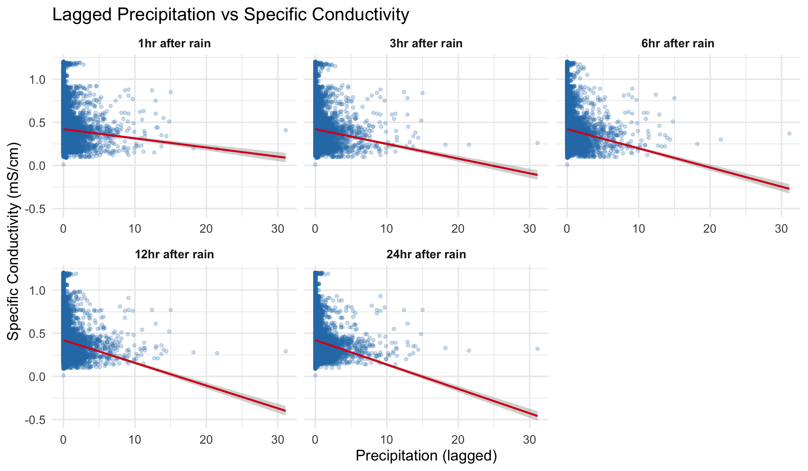
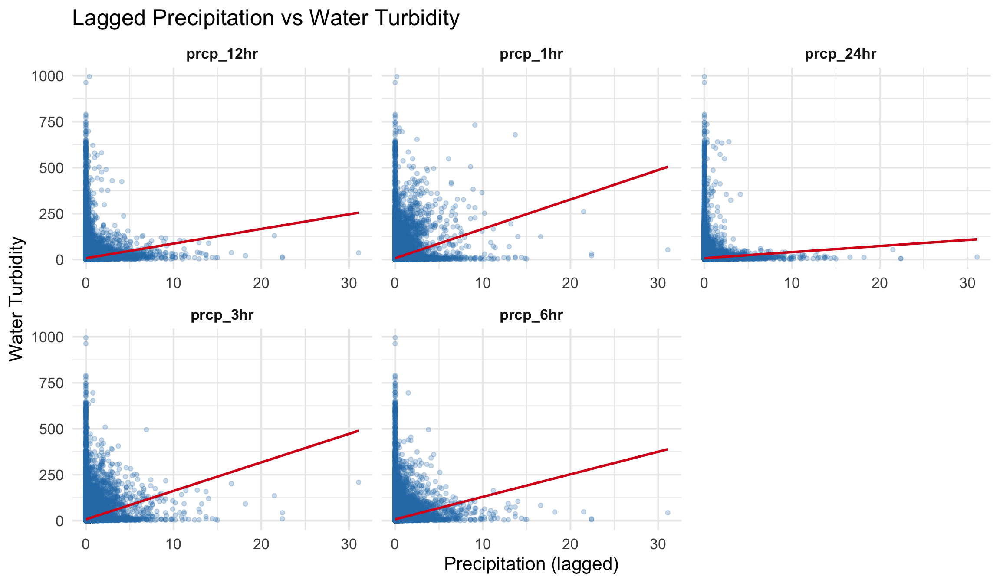

This is my title
Ilianna Ditren, Natalie Novoseltseva, Mikhal
Project Background
- Focus area: Stony Creek, NY
- Initial analysis covered 2020–2021 data
- Original project analyzed:
Our Contributions
- Expanded analysis to all available years (2002-2021)
- Combined water quality data with weather data
- Explored:
- Long-term trends
- Weather–water relationships
- Seasonal patterns
- Anomalies and possible data errors
Research Question
How did water quality indicators change over time, and were these changes associated with weather conditions?
- Exploratory analysis only
- First step toward studying climate-related environmental change
What the Report Includes
- Data cleaning and preparation
- Exploratory analysis
- Visualizations
- Seasonal analysis
Data Sources
Stony Creek water quality data (2002–2021)
Hudson Field Station weather data (2001–2026)
Data source: Centralized Data Management Office (CDMO) https://cdmo.baruch.sc.edu
Data Cleaning
Remove empty rows and columns
Separate data and time column.
Add a year, month and season column.
Remove flagged columns
Final Dataset
combined: Creates one dataset by joining water quality data from Stony Creek and meteorological data from Hudson Field Station.
Main Variables
| Turb |
Turbidity measured in units referred to as FNU/NTU, depending upon sensor. |
|
| TotPrcp |
total precipitation measured in millimeters (mm) |
|
| SpCond |
Specific conductivity measured in milli-Siemens per centimeter (mS/cm) |
|
Initial Exploratory Analysis
Summary Statistics
- The table summarizes the key statistics for the main water quality variables in the Stony Creek dataset from 2002 to 2021.
<<<<<<< Updated upstream
| mean |
15.14 |
8.36 |
7.85 |
0.21 |
8.23 |
2.83 |
0.41 |
| sd |
6.55 |
3.21 |
0.29 |
0.07 |
22.85 |
1.58 |
0.13 |
| min |
−0.10 |
0.00 |
6.90 |
0.00 |
−1.00 |
0.00 |
0.01 |
| max |
28.40 |
19.90 |
9.70 |
0.70 |
2,360.00 |
40.80 |
1.40 |
| Data Source: Centralized Data Management Office (CDMO), https://cdmo.baruch.sc.edu |
- Examining seasonal means shows that water temperature and temperature-dependent variables such as dissolved oxygen, turbidity, and conductivity vary significantly across seasons. Among these, it is notable that the summer–fall and winter–spring values are relatively similar for some variables.
<<<<<<< Updated upstream
<<<<<<< Updated upstream
=======
<<<<<<< HEAD
=======
>>>>>>> Stashed changes
<<<<<<< Updated upstream
=======
>>>>>>> 88ce668b58a24bad9ab70badedeafcd8ee334f11
>>>>>>> Stashed changes
| season |
Temperature |
Dissolved Oxygen |
pH |
Salinity |
Turbidity |
Chlorophyll |
Conductivity |
| Fall |
12.24 |
8.48 |
7.78 |
0.22 |
6.77 |
2.73 |
0.44 |
| Spring |
13.42 |
10.08 |
8.03 |
0.18 |
7.34 |
3.12 |
0.35 |
| Summer |
21.33 |
6.26 |
7.76 |
0.21 |
10.24 |
2.64 |
0.44 |
| Winter |
2.84 |
13.24 |
7.94 |
0.18 |
8.77 |
3.36 |
0.35 |
<<<<<<< Updated upstream
=======
<<<<<<< HEAD
=======
>>>>>>> 88ce668b58a24bad9ab70badedeafcd8ee334f11
>>>>>>> Stashed changes
| Data Source: Centralized Data Management Office (CDMO), https://cdmo.baruch.sc.edu |

- The plot shows yearly average water temperature from 2001–2021, the red dashed line represents the mean temperature, blue bars indicate above-average years, gray below-average years.

Data source: Centralized Data Management Office (CDMO), NOAA NERRS (https://cdmo.baruch.sc.edu)
Precipitation vs Specific Conductivity

Data source: Centralized Data Management Office (CDMO), NOAA NERRS (https://cdmo.baruch.sc.edu) *
<<<<<<< Updated upstream
=======
<<<<<<< HEAD
=======
>>>>>>> 88ce668b58a24bad9ab70badedeafcd8ee334f11
>>>>>>> Stashed changes
Lagged Effects of Precipitation on Conductivity

Data source: Centralized Data Management Office (CDMO), NOAA NERRS (https://cdmo.baruch.sc.edu)
<<<<<<< Updated upstream
=======
<<<<<<< HEAD
Precipitation vs Turbidity

Data source: Centralized Data Management Office (CDMO), NOAA NERRS (https://cdmo.baruch.sc.edu) *
Lagged Effects of Precipitation on Water Turbidity

Data source: Centralized Data Management Office (CDMO), NOAA NERRS (https://cdmo.baruch.sc.edu)
=======
>>>>>>> 88ce668b58a24bad9ab70badedeafcd8ee334f11
>>>>>>> Stashed changes
<<<<<<< HEAD
=======
Summary Stat Boxplots - 2020
Temperature Exploration
- Initial plots using geom_line() and geom_point() reveled predictable seasonal variations
- Summer peaks and Fall declines: consistent for both years
- For monthly comparison, July and August consistently warm months (though 2021 still had missing data for some of this period)
- Winter data sparse and so it was discluded from future visualizations
Salinity Exploration
- I created bar plots and faceted by month in order to visualize frequencies of salinity levels on a granular level
- This variable was focused on due to the nature of the variable
- It is a raw measurement and therefore I later rounded it into bins.
- Monthly visualizations showed interesting differences in salinity levels, particularly the spread of them. For example, in November, 2020 salinity levels concentrate almost entirely at 0.2. In contrast, in September, levels were much more spread between 0.1 and 0.4.
Salinity Continued
- I also explored other ways to visualize Salinity data for both years
- I later took out the monthly facets and observed proportionality seasonally by year.
- These plots also show the difference in spread between 2020 and 2021, though 2021 does have more missing data which may partially influence this.
Salinity Plots Proportionally - 2020
Salinity Proportionally - 2021
Temperature and pH Visual Exploration
- I created boxplots to look at seasonal temperature distributions specificially
- I also used density plots to look at a more full distribution of the same information, using transparency for the overlaps
- pH distributions were observed using both faceted density plots and boxplots. These visualizations showed the significant changes in pH over the seasons in 2020 and 2021. These are interestingly very different across both years.
Variable Time Series and Daily Averages
- Daily averages were calculated using
group_by() and summarize(). Orignal measurements were collected every 15 minutes. This was used to reduce noise/ fluctuations and highlight broader trends.
- Line plots showed seasonal patterns for pH, salinity, temperature, depth, conductivity, turbidity, chlorophyll fluorescence, and dissolved oxygen
Geom_smooth() was used to add trend lines
Correlation Plots (Using Means)
- Scatterplots used
geom_jitter to make plots more easily interpretable
- Facets by season showed differences in the strength of correlations
- Salinity was mutated into bins to look at mean temperature against mean salinity
- Salinity plots were replicated using the Conductivity variable instead in order to return to a raw measurement (salinity is in part derived from conductivity)
- Plots were also used to verify relationship between salinity and conductivity
Mean pH v. Mean Salinity in 2021
Mean pH v. Mean Conductivity 2020
Mean pH v. Mean Conductivity 2021
Combined Dataset Exploration
Also this:
Plots were made from daily means for each variable over the course of the year for 2020 and 2021
Smoothed lines for better interpretability of broad trend.
The combined dataset works more effectively for comparison
Also better for consistency for x and y axis
Conclusion
Analysis of the data revealed interesting distributional differences between water quality indicators/ variables
Differences between season, month, and year were also discovered
Missing data in 2021 may limit findings
In Future:
Add more years for stronger trends
Link water quality shifts to external conditions such as climate or tides
Create model for prediction of these variables
>>>>>>> 88ce668b58a24bad9ab70badedeafcd8ee334f11